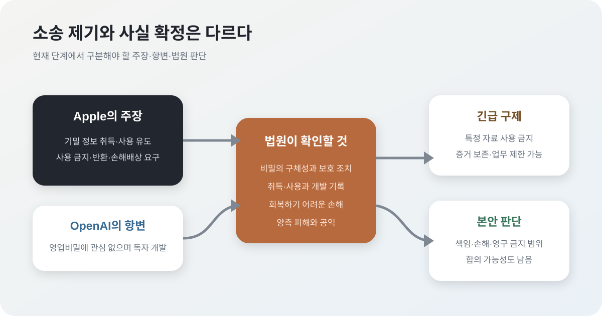

Apple과 OpenAI의 소송: AI 하드웨어 경쟁은 영업비밀 싸움으로 갔다
Apple이 OpenAI와 전직 Apple 직원들을 상대로 영업비밀 침해 소송을 냈다. 단순한 인재 이동 분쟁으로 보기 어렵다. OpenAI가 Jony Ive의 io를 인수한 뒤 추진하는 AI 기기 전략, Apple의 하드웨어 방어, 그리고 OpenAI의 상장 준비가 한 지점에서 충돌한 사건이다.
핵심 요약
AI 회사가 화면 밖으로 나오자, 기존 하드웨어 강자가 법정으로 움직였다
AP는 Apple이 2026년 7월 10일 캘리포니아 연방법원에 소송을 제기했다고 보도했다. Apple은 OpenAI가 Apple 직원을 채용하면서 기밀 정보를 가져가도록 유도했고, 전직 직원 Tang Tan과 Chang Liu가 Apple의 민감한 하드웨어 관련 자료에 접근했다고 주장한다. OpenAI는 다른 회사의 영업비밀에 관심이 없다는 입장을 냈다.

왜 중요한가
OpenAI는 더 이상 모델 API와 챗봇만 파는 회사가 아니다. 회사는 io 인수 이후 AI를 쓰는 새로운 물리적 인터페이스를 만들겠다는 신호를 계속 냈고, AP는 OpenAI 최고재무책임자가 올해 봄 소비자 하드웨어가 연말 무렵 나올 것이라고 말했다고 전했다. Apple 입장에서는 이 움직임이 단순한 협력사의 실험이 아니라 장기적으로 iPhone 이후의 사용 경험을 겨냥한 경쟁으로 보일 수 있다.
이 소송은 AI 업계의 인재 쟁탈이 어디까지 허용되는지 묻는다. 모델 연구자뿐 아니라 제품 디자인, 공급망, 제조, 센서, 배터리 같은 하드웨어 인재도 AI 경쟁의 핵심 자산이 됐다. 빠른 채용과 인수합병으로 제품을 당겨 만드는 방식은 속도를 주지만, 이전 직장의 자료와 노하우를 어디까지 분리해야 하는지에 대한 법적 리스크도 커진다.
Apple이 주장한 행위와 OpenAI의 입장
AP와 Reuters 보도에 따르면 Apple은 OpenAI, io Products, 전직 Apple 직원 Tang Tan과 Chang Liu 등을 피고로 지목했다. Apple의 주장은 단순히 경쟁사로 이직했다는 것이 아니라, 채용 과정에서 향후 제품 설계·제조 공정·공급망 전략 등 비공개 정보를 가져가거나 공유하도록 유도했다는 것이다. 이는 전적으로 원고의 주장이고 향후 증거로 입증돼야 한다.
Apple은 기밀 자료의 사용·공개 금지, 자료 반환, 관련 증거 보존과 손해배상을 요구한 것으로 보도됐다. 긴급 금지명령이 청구되고 법원이 받아들인다면 OpenAI는 특정 설계나 개발 작업을 중단하거나 독립 개발 과정을 증명해야 할 수 있다. 하지만 소송 제기만으로 제품 전체가 자동 중단되는 것은 아니다.
OpenAI는 다른 회사의 영업비밀에 관심이 없고 독자적으로 혁신 기술을 개발한다는 취지로 부인했다. Jony Ive는 io 공동창업자이자 OpenAI의 하드웨어 전략에 핵심 인물이지만 주요 보도 기준으로 이번 소송에서 개인 피고로 지목된 것은 아니다. 피고와 관련 인물을 섞어 쓰지 않아야 한다.
영업비밀은 ‘경험’과 다르다
직원은 이직할 때 일반적인 기술, 경험, 기억 속 노하우를 가져갈 수 있다. 반면 회사가 합리적으로 비밀로 관리하고 독립된 경제적 가치를 가진 설계도, 미공개 부품 사양, 제조 공정, 공급업체 조건 같은 정보는 영업비밀이 될 수 있다. 법정에서는 Apple이 각 비밀을 충분히 구체화하고 실제 보호 조치를 취했는지가 먼저 쟁점이 된다.
그다음은 피고가 그 정보를 부정한 방법으로 취득·사용했는지다. 비슷한 제품을 만들었다는 사실만으로는 부족하다. 파일 접근 기록, 메시지, 채용 인터뷰 지시, 반입된 부품·도면과 OpenAI 설계 변경의 시간축이 연결돼야 한다. 반대로 공개 정보나 독립 연구로 같은 결론에 도달했다면 침해가 아닐 수 있다.
그래서 증거개시가 중요하다. 법원 절차가 진행되면 채용 커뮤니케이션, 저장소와 기기 로그, 설계 문서의 생성 이력, io 인수 전후의 개발 자료가 검토될 수 있다. 이 과정 자체가 비공개 제품 정보를 더 넓게 노출할 위험이 있어 양측은 보호명령과 비공개 제출을 놓고 다툴 수 있다.
금지명령은 Apple에도 높은 문턱이다
본안 판결 전에 개발을 막는 예비적 금지명령은 회복하기 어려운 손해, 승소 가능성, 양측 피해의 균형과 공익을 따진다. Apple은 제품이 출시되면 비밀의 가치가 되돌릴 수 없게 훼손된다고 주장할 수 있다. OpenAI는 광범위한 중단이 독립 개발까지 막고 경쟁을 해친다고 반박할 수 있다.
법원은 전체 하드웨어 사업을 멈추는 대신 특정 자료와 설계의 사용 금지, 포렌식 보존, 관련 직원의 업무 제한처럼 좁은 조치를 선택할 수도 있다. 따라서 ‘소송이 OpenAI 기기를 끝냈다’는 표현은 이르다. 실제 영향은 법원이 어떤 비밀을 특정하고 어떤 구제를 명령하는지에 달려 있다.
왜 AI 회사는 굳이 하드웨어로 가려 하나
스마트폰 안에서 AI를 제공하면 운영체제 사업자가 기본 앱, 센서 접근, 알림과 결제를 통제한다. OpenAI가 자체 기기를 가지면 마이크·카메라· 메모리·배터리와 사용자 경험을 모델에 맞춰 설계하고, Apple이나 Google의 배포 규칙에서 일부 벗어날 수 있다. io 인수에 약 65억 달러를 쓴 것으로 보도된 배경도 이런 인터페이스 주도권에 있다.
그러나 하드웨어는 모델보다 복잡한 공급망과 긴 검증 주기를 가진다. 배터리 안전, 무선 인증, 개인정보 보호, 제조 수율, 반품과 수리까지 관리해야 한다. Apple 출신 인재는 이 시간을 줄일 수 있지만, 바로 그 때문에 이전 직장의 기밀과 독립 개발의 경계를 더 엄격히 기록해야 한다.
과장해서 읽으면 안 되는 부분
소송이 제기됐다는 사실과 Apple의 주장이 사실로 확정됐다는 것은 다르다. Axios도 Apple의 소장이 구체적인 퇴사자 행위는 제시하지만, OpenAI가 조직적으로 지시했다는 직접 증거 인용은 상대적으로 약하다고 짚었다. 따라서 지금 단계에서 “OpenAI가 훔쳤다”고 단정하기보다, Apple이 OpenAI의 하드웨어 사업 자체를 법적으로 흔들기 시작했다고 보는 편이 정확하다.
Apple과 OpenAI의 기존 협력도 즉시 끝났다고 단정할 수 없다. ChatGPT의 Apple 제품 통합과 하드웨어 소송은 별도 계약으로 관리될 수 있고, 양사는 경쟁과 협력을 동시에 이어갈 수 있다. 실제 변화는 서비스 계약 수정이나 공식 발표로 확인해야 한다.
한국 독자에게 중요한 이유
한국의 전자, 부품, 배터리, 디스플레이, 제조 기업에도 같은 질문이 온다. AI 기기가 스마트폰 이후의 주 인터페이스가 된다면, 모델 회사와 하드웨어 회사 사이의 경계가 흐려진다. 이때 핵심은 모델 성능만이 아니라 제품 설계, 공급망, 센서, 데이터 처리, 기기 보안이다. 인재 이동과 협력 계약에서 영업비밀 관리가 더 중요해질 수밖에 없다.
국내 기업은 퇴사자의 개인 기기와 클라우드 저장소 반출을 막는 것만으로 부족하다. 채용 면접에서 경쟁사의 비공개 자료를 요구하지 않는 규칙, 입사 후 일정 기간 독립 개발을 문서화하는 클린룸 절차, 협력사와 공동 개발한 자료의 소유권을 명확히 해야 한다. AI가 문서를 요약하고 코드를 생성할 때 기밀이 외부 모델로 들어가는 경로도 같은 통제 대상이다.
삼성전자·LG전자와 부품사는 AI 기기의 공급망 기회를 볼 수 있지만, 설계 협력 단계에서 받은 정보의 사용 범위를 제품·기간별로 분리해야 한다. 모델 회사가 빠르게 인수합병하고 인력이 이동할수록 계약상 비밀과 실제 저장소 권한을 맞추는 운영 능력이 경쟁력이 된다.
앞으로 볼 포인트
- 법원이 Apple의 예비적 금지명령 요청을 받아들여 OpenAI 하드웨어 개발에 실제 제동을 거는지
- OpenAI가 하드웨어 출시 일정을 조정하거나 제품 범위를 축소하는지
- Apple과 OpenAI의 iPhone 내 ChatGPT 협력이 계속 유지되는지
- AI 기업 채용 과정에서 전 직장 자료 반입 금지와 인터뷰 절차가 더 엄격해지는지
내가 보는 핵심
이 소송은 Apple이 AI를 두려워한다는 단순한 이야기도, OpenAI의 절도가 확정됐다는 사건도 아니다. 소프트웨어 AI 기업이 물리적 제품으로 확장하면서 하드웨어 산업의 느린 개발 주기, 인재 이동 규칙과 증거 관리 체계를 한꺼번에 마주한 사건이다.
판결보다 먼저 볼 것은 금지명령 범위와 증거개시다. OpenAI가 설계의 독립성을 얼마나 문서로 입증하는지, Apple이 영업비밀을 얼마나 구체적으로 특정하는지가 승부를 가른다. 제품 경쟁에서는 모델 성능뿐 아니라 깨끗한 개발 이력을 유지하는 능력도 핵심 자산이 됐다.
출처
- AP: Apple files lawsuit accusing ChatGPT maker OpenAI of stealing trade secrets
- The Verge: Sam Altman didn't need another lawsuit
- Axios: Litigation puts OpenAI plan on pause
- Business Insider: Apple and OpenAI's lawsuit is a reminder that not everything from your old job is yours to bring
- El Pais: Apple demanda a OpenAI por robo de informacion confidencial
- TechCrunch: Apple's requested remedies and OpenAI hardware background